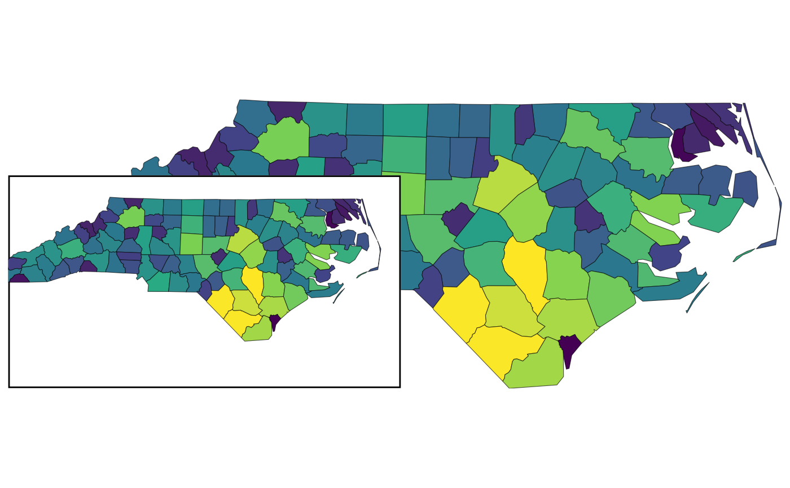

A wrapper around ggplot2::ggsave() that automatically calculates the output
dimensions based on the full ratio defined in the inset configuration.
This ensures the saved image maintains the correct aspect ratio for proper
rendering of all subplots.
Usage
ggsave_inset(
filename,
plot = last_plot(),
device = NULL,
path = NULL,
scale = 1,
width = NA,
height = NA,
...,
ratio_scale = 1,
.cfg = last_insetcfg()
)Arguments
- filename
Filename to save the plot to. Passed directly to
ggplot2::ggsave().- plot
The plot to save. Default
ggplot2::last_plot().- device
Device to save to (e.g., "png", "pdf"). Default NULL (inferred from filename).
- path
Directory path for saving. Default NULL (current directory).
- scale
Scaling factor. Default 1.
- width, height
Width and height in inches. You only need to provide one; the other will be calculated automatically. Default NA.
- ...
Additional arguments passed to
ggplot2::ggsave().- ratio_scale
Optional scaling factor to adjust the aspect ratio. Default 1.0. Use when there are extra elements (e.g., titles, legends) that affect the overall image dimensions. For example, set to 1.1 for extra width when a legend is present on the left/right side.
- .cfg
An inset configuration (class
insetcfg) created byconfig_insetmap().
Details
All parameters are the same as ggplot2::ggsave(), except that you only need to
provide either width or height, and the other dimension will be calculated
automatically to match the aspect ratio defined in the inset configuration.
The function automatically calculates width and height based on .cfg$main_ratio
to maintain aspect ratio consistency. If both width and height are provided,
a warning is issued as the output aspect ratio may not match the configuration.
Examples
library(sf)
library(ggplot2)
nc <- sf::st_read(system.file("shape/nc.shp", package = "sf"), quiet = TRUE)
config_insetmap(
bbox = st_bbox(nc),
specs = list(
inset_spec(main = TRUE),
inset_spec(
xmin = -84, xmax = -75, ymin = 33, ymax = 37,
loc = "left bottom", width = 0.3
)
)
)
base <- ggplot(nc, aes(fill = AREA)) +
geom_sf() +
scale_fill_viridis_c() +
guides(fill = "none") +
theme_void()
with_inset(base)

# Save with automatically calculated height
ggsave_inset(paste0(tempdir(), "/inset_map.png"), width = 10)